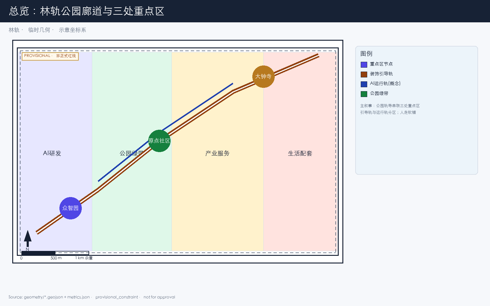
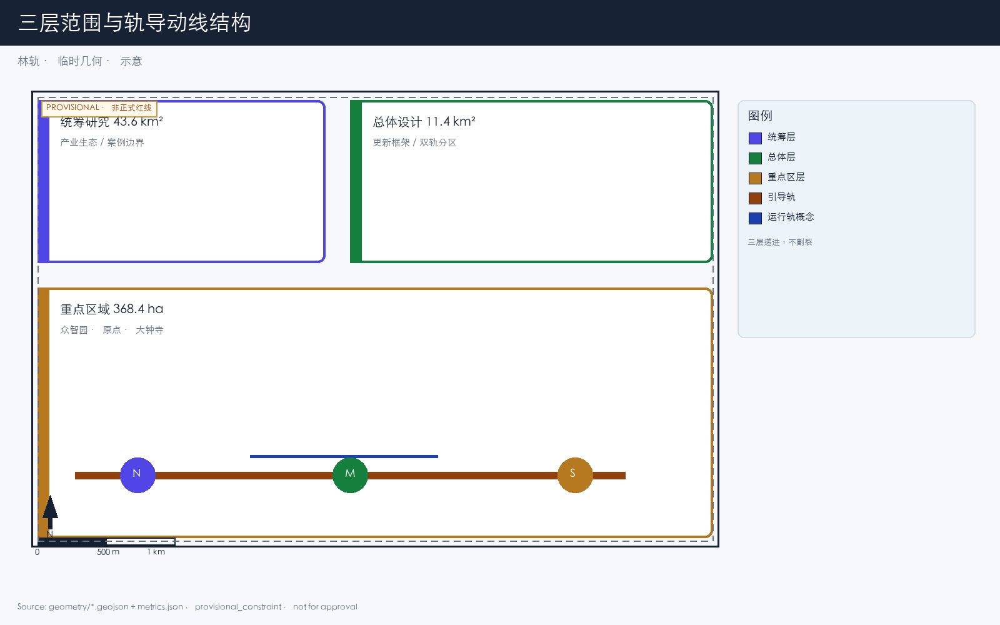
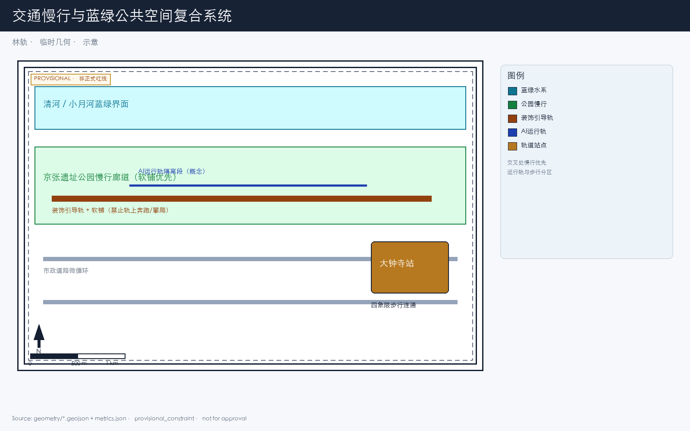
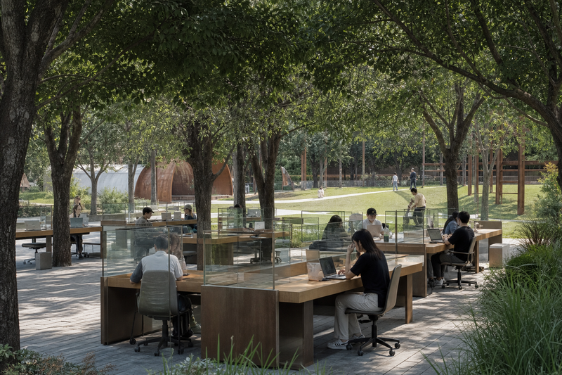
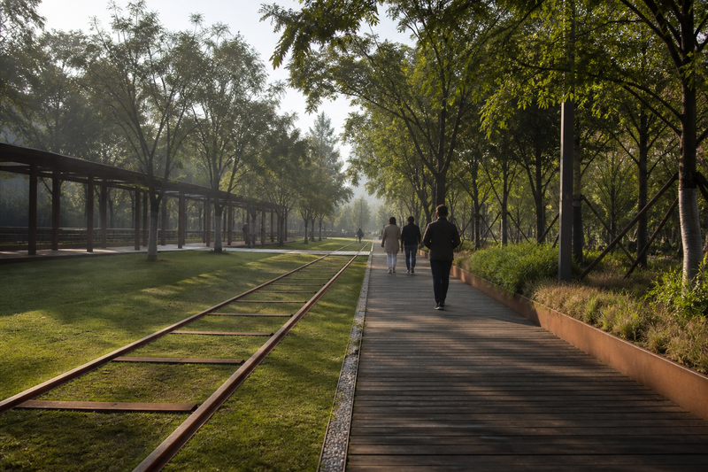
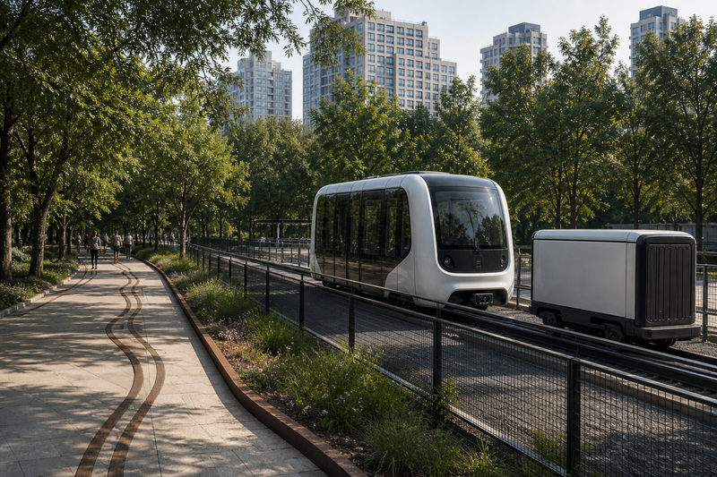
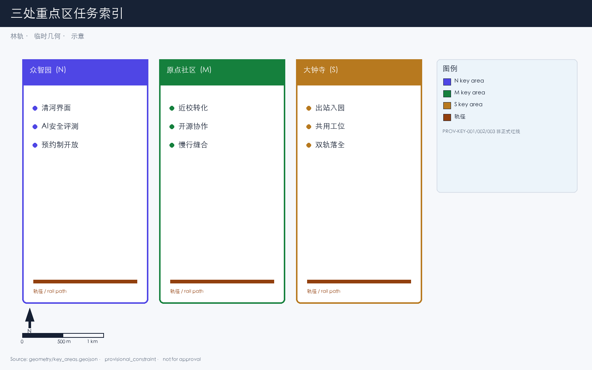
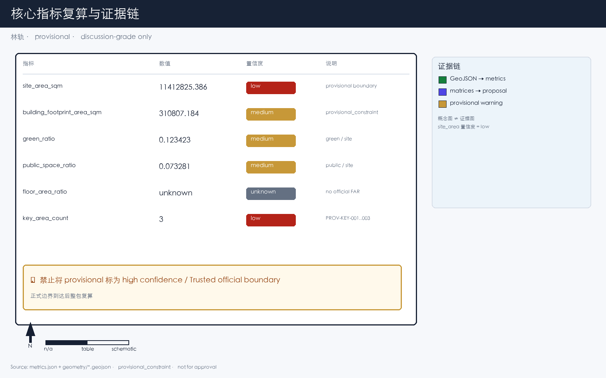

林轨 / Forest Rail
把京张遗址公园接到大钟寺的日常：装饰引导轨与 AI 运行轨分区；公园共用林下工位；传承京张铁路精神、敢于突破，但不办科技秀场。
林轨 / Forest Rail
京张铁路遗址公园已经把铁轨留在了城里：有人跑步，有人推童车，有人沿轨散步。本方案不重新发明这条公园，也不把它做成科技秀场。问的是另一件事——大钟寺这一端怎么接进公园，人出站之后往哪走、在哪停、能不能坐下来安静做事 来源。
回答叫「林轨」：
- 林：大钟寺段按公园做——修剪草坪、疏林、树冠压住楼顶；望出去是树，不是对面幕墙。
- 轨（双轨分区）：
- 装饰引导轨：锈轨 / 仿轨 / 地面绘画，只给方向；人走软铺（木栈、石粉），孩子不在轨上跑、不在轨上攀爬。 - AI 运行轨（概念）：可载人短驳 + 自动配置货物；与步行、装饰轨分区隔离，待专业深化。
一句话：楼在树下，人在公园里，锈轨指路、运行轨另走——望出去是自然。
本案传承京张铁路敢为人先的精神，敢于在日常公园里把遗产轨转化为可走、可坐、可共事的公共基础设施；但不空喊赋能、不做网红打卡。
本方案不做的事：全区楼宇总控、网红打卡装置、灯光秀、把绿化条当成公园、把共用工位做成私人舱、把装饰轨做成攀爬设施。
动线只加一条轨导走廊（引导轨为主，运行轨仅在隔离段概念保留）。走廊以外，路网怎么走还怎么走。
设计依据与资料清单
本方案以《百年京张AI创新带城市设计国际方案征集资格预审公告》为第一依据 来源，以 brief/site-package/ 中登记的临时边界、重点区域和指标范围为机器可读依据 来源。
当前采用 provisional boundary（geometry/site_boundary.geojson、geometry/key_areas.geojson），标注 provisional_constraint、official_boundary=false。正式边界发布后，所有空间数据、指标和图纸需要重新计算。这个限制不阻断内容评分，但正文中涉及面积、比例和空间位置的结论只能作为可讨论、可替换的设计参考。
资料登记表（data/source_registry.json）登记 formal 可用资料 7 条、背景资料 1 条、provisional-only 资料 1 条。背景和 provisional 资料不升级为法定依据 来源。
包内权威顺序：GeoJSON → metrics → 三矩阵 → sources/assumptions/self_check → proposal.md → 图 → HTML → PDF。概念示意不能替代证据图。

三层范围工作框架
方案按公告三个层次组织 来源：
| 层级 | 面积 | 林轨在这层做什么 |
|---|---|---|
| 统筹研究（43.6 km²） | AI 产业生态与城市形态判断 | 确认京张走廊是组织主轴；林轨从遗址公园南端（大钟寺）向北延伸的可能 |
| 总体设计（11.4 km²） | 遗址公园周边城市更新框架 | 轨导动线串联三处重点区；公园慢行与软铺代替硬质铺装；树冠作风貌控制 |
| 重点区域（368.4 ha） | 三处详细设计 | 大钟寺把公园组件落全：树冠、轨径、软铺、共用林下工位、锈 |
三层不割裂：统筹定走向，总体落图层，重点区验证组件能不能在地块上放下。

统筹研究范围产业与未来城市研究
京张铁路是这片区域里已有的叙事线，不需要再发明一条。1909 年通车，2019 年地下化后地面段成为遗址公园走廊。公告要求融合百年京张文化、中关村创新文化与 AI 创新文化 来源。
林轨的判断很窄：不另造叙事，用铁轨本身；不另造绿廊，把公园接到大钟寺日常。 轨条留在地上，生锈；人走在轨间软铺上。这条线串起三处重点区——众智园临清河，原点社区近高校，大钟寺临地铁。轨导动线是脊柱，不是装饰。
产业协同按人真会走的路径写：
- 高校策源：成果沿遗址走廊向南走，不悬空画圆
- 开源协作：原点社区接发布与代码协作
- 企业转化：大钟寺接智能体、终端与数据要素企业
- 公共服务：沿轨径放可问人的服务节点，不堆无人屏幕
- 国际交流：用可步行的轨径组织访问路线，不做巡游舞台
命名：「林轨」既是方案名也是空间描述。不需要 logo——轨道本身就是标识。锈色与树冠绿够了。
城市公园与线性公园：全球 / 国内案例（可迁移边界）
统筹层不另造绿廊叙事，而是把「著名城市公园 / 线性公园」的可迁移机制对齐到京张遗址走廊。下列案例均为公开建成或已运营的公共项目；本案学习其公共性与线性组织，不照搬网红装置或攀爬式遗产消费。
| 案例 | 可迁移机制 | 对本案边界（学什么 / 不学什么） |
|---|---|---|
| 纽约 Central Park | 开阔草坪、全龄公共、城市森林尺度 | 学：大钟寺段按公园做（草坪/疏林/可坐），不是楼旁绿化条；不学：巨型综合公园的完整设施清单 |
| 纽约 High Line | 废弃铁路抬升段再利用为线性慢行公园 | 学：铁路遗产→可走公共空间；不学：高架游览消费；对照——本案装饰轨≠攀爬设施，人走软铺 |
| 费城 Rail Park | 铁路廊道分段开放、社区日常使用 | 学：分段试点、近期轻量即可启动；不学：把未完成段包装成已建成体验 |
| 伦敦 King's Cross 公共空间 | 站点周边广场—慢行—混合功能缝合 | 学：出站即入公共空间（大钟寺四象限）；不学：商业综合体主导的广场逻辑 |
| 马德里 Río | 市政基础设施上方/旁侧恢复连续滨河公园 | 学：蓝绿连续、慢行贯通优先于展示；不学：大规模高架覆盖式土建规模 |
| 首尔清溪川 / 首尔路 | 城市线性公共空间恢复与高架铁路段公园化 | 学：线性公共性、市民日常使用；不学：大规模河道开挖式工程叙事 |
| 上海徐汇跑道公园 | 废弃机场跑道→线性公园，步行/骑行分层 | 学：交通遗存转译为日常线性公园；不学：航空主题打卡装置堆叠 |
| 北京奥林匹克森林公园 / 朝阳公园 | 城市尺度公园、全龄活动与疏林草坪 | 学：城市森林气质与全龄包容；不学：另辟巨型新公园占地 |
| 京张铁路遗址公园（已建） | 既有铁轨留城、慢行与日常散步已发生 | 学：接进大钟寺日常、做增量连接；不学：抢功重做已建公园、另造平行绿廊 |
本案立场：传承京张铁路精神、敢于突破——把遗产轨从「可看」推进到「可引导、可共事、可概念短驳」；但突破落在安全分区与日常公共性，而不是赋能口号或网红设施。
城市公园案例背景来源登记于 sources.json（非法定依据）。北美线性/城市公园见 来源、来源、来源。欧洲与东亚见 来源、来源。国内与在地基线见 来源、来源、来源。
总体设计范围城市更新与控规深度城市设计
动线结构
轨导动线沿京张遗址公园走廊布置，大钟寺段是南端门户。动线不是新画的红线，是对既有铁路线位的复用——公园已经在走，本案只把大钟寺站口接到这条公园上。
众智园（北）──轨── AI 原点社区（中）──轨── 大钟寺（南）
│ │
清河界面 近校慢行缝合动线上的铁轨分两种作用，物理分区、互不混用 来源：
| 作用 | 用什么 | 干什么 | 边界 |
|---|---|---|---|
| 装饰引导轨 | 锈轨 / 仿轨 / 地面绘画 + 软铺 | 方向：眼睛跟锈轨，脚下走木栈或石粉；可坐、可慢 | 禁止在轨上奔跑/攀爬；不加灯带；标志极弱（模式 A） |
| AI 运行轨（概念） | 隔离可运行轨段 | 低速载人短驳 + 自动配置货物/物料 | 与步行、装饰轨分区；不写已成熟商用；待专业团队深化 |
同一条走廊分段处理：多数路段只做装饰引导轨；少数隔离路段概念上保留 AI 运行能力；交叉处慢行优先、运行轨让行。运行轨失败或未获深化，引导轨与公园仍可独立成立。
用地、建筑规模与拆改留方案
总体设计范围内的更新按三类处理：
- 保留：京张遗址走廊两侧已建成且质量良好的建筑，不动
- 改造：首层业态和外立面需要调整的建筑——去掉 LED 屏、增加林下通透性
- 更新：低效空间识别后的新建机会——新建建筑高度控制在树冠以下
用地方案依据国土空间分类标准表达 标准，覆盖设计边界且无重叠 空间数据。建筑基底和保留/改造/更新分类记录在 空间数据。
凡涉及容积率、建筑高度、道路红线等控制条件，当前无官方数据的标注 unknown，不编数字。
交通、轨道、市政与公共服务设施
交通方案回应公告对轨道站点一体化、道路微循环、慢行断点和绿色交通的要求 深度。
重点处理：
1. 大钟寺站四象限步行连通：地铁 13 号线大钟寺站周边，打通路口四个象限的步行联系，轨径从站口延伸进片区 2. 北五环跨越节点：遗址走廊跨北五环处的慢行衔接（桥下空间或跨线设施），保持南北贯通 3. 轨径与市政道路交叉：交叉处慢行优先，轨条嵌入路面标识方向，不设信号灯管轨径
道路和慢行图层保持在提交边界内 空间数据，与公共空间、绿地相互校核。当前边界为 provisional，交通结论只能作为设计讨论。

市政设施覆盖端侧算力节点、分布式能源和传统市政融合。缺少管线、能源、排水等工程资料时列为深化前置条件，不编工程参数。
蓝绿空间、公共空间与城市风貌
蓝绿空间以京张遗址走廊为骨架，统筹清河、小月河和周边社区出行 深度。
树冠层是风貌控制的核心手段：选冠幅 ≥8m 的本土乔木（国槐、白蜡、银杏、栾树），覆盖率目标 ≥70% 建筑屋面。树不修剪成几何造型。建筑高度低于树冠——这是城市森林的基本判据。
风貌原则：
- 建筑外立面用砖、混凝土、木材等可老化材料，不用光滑玻璃幕墙
- 锈色和灰绿是基调色，来源于轨道氧化和树冠
- 屋顶不做造型，做绿化或设备平台
- 公共艺术只接受与场地历史相关的、可老化的作品——铁、石、木，不用不锈钢和灯光装置
城市风貌控制中哪些是设计建议、哪些待官方确认，在 standard_matrix.json 中逐条标注。
重点区域详细设计
众智园 AI 自主创新加速区
位置：最北段，临清河 空间数据。
定位：花园型全栈自主创新街区。清河界面是它的公共客厅——把绿色空间、雨洪管理、步行骑行和 AI 安全测试展示结合起来。
空间动作：
- 清河界面：退让建筑，留出林下步道和滨水草坡
- 产业展示：标准制定、安全评测、模型红队测试转译为可参观的协作节点——预约制，不做开放景点
- 对外交通：强化与北五环以北区域的慢行连接
- 低碳能源：分布式光伏与端侧算力结合，作为待深化的新型基础设施原型
北京 AI 原点社区
位置：中段，近清华、北航等高校 空间数据。
定位：近校型成果转化与人才社区。
空间动作：
- 校区-园区-街区慢行缝合：打通围墙和断点，用轨径连接校门和园区入口
- 成果发布空间：开源发布厅、公共代码墙（物理屏幕展示实时开源贡献），小型路演
- 人才服务：居住、餐饮、运动嵌入街区，不集中做"人才公寓综合体"
- 开源协作：24 小时开放的协作空间，按使用强度分安静区和讨论区
大钟寺 AI 产业聚集区——城市森林
位置：最南段，临地铁 13 号线大钟寺站 空间数据。
定位：城市型智能经济街区，也是林轨落得最完整的一端——出站即入公园，公园里能共用一张桌子。
五个组件：
| 组件 | 在大钟寺怎么用 | 不许做什么 |
|---|---|---|
| 树冠层 | 国槐、白蜡为主，冠幅 ≥8m，覆盖既有建筑屋面和新建低层 | 不修剪成球形或方形；不用观赏小乔木充数 |
| 轨径 | 从大钟寺站出站后，装饰引导轨（锈轨/仿轨/地面绘画）嵌入地面指向公园；人走软铺 | 不架高做景观桥；不抛光；不喷漆；不加灯带；不在轨上跑/攀爬 |
| 软铺 | 轨间走道用木栈道、透水砖、石粉路面，脚感舒适 | 不铺大面积沥青；不用光滑石材（雨天滑） |
| 林下办公 | 公园内专用共用工位区：多工位、玻璃隔断、谁来谁坐；另有建筑首层林冠遮蔽 | 不设私人专属舱；不装 LED 外立面；不做网红打卡舱 |
| 锈 | 轨条和钢构件保持自然氧化，作为时间标记 | 不用 Cor-Ten 仿锈面板；不人工做旧后喷透明漆 |
大钟寺站一体化：A/B/C/D 四个出口各引一条轨径进四个象限。人从地下出来，第一眼应是公园与锈轨，不是广告屏。
商业服务：沿轨径分散布置，不集中做综合体。展厅朝向轨径；数据要素服务须合规、授权、可审计。
公园复合利用：轨径落在公园里——修剪草坪、疏林、软铺慢行。共用工位是公园里的专用区，不是把写字楼大厅搬到户外。
概念示意（非正式证据图；正式空间主张仍以 GeoJSON / metrics / 五张证据图为准）：





三处重点区域在 geometry/key_areas.geojson 中出现。当前为 provisional constraint，正文、HTML 和 self_check 均说明不能作为审批依据。
AI 创新生态、人才画像与 AI+ 场景
场景卡与画像对齐公告 agent.3 要求 来源，深度矩阵见 深度。
| 画像 | 谁 | 在林轨上做什么 | 数据边界 |
|---|---|---|---|
| 走路通勤的程序员 | 住在附近、每天步行上班的 AI 工程师 | 从大钟寺站出来，沿轨径走 800m 进办公楼；中午在林下吃饭；下班沿轨径散步回家 | 不采集个人通勤轨迹；轨径人流只做匿名计数 |
| 带孩子散步的居民 | 片区周边小区住户 | 傍晚推婴儿车沿软铺走，孩子在轨旁软铺上跑（不在锈轨上）；在林下座椅坐着聊天 | 不采集家庭画像；不推送商业信息 |
| 来开会的企业访客 | 头部企业的商务客人 | 大钟寺站出来，轨径引导到企业展厅；开完会沿轨径走到下一个节点 | 企业标识和案例需清权 |
| 独自工作的自由职业者 | 不在固定公司上班的人 | 早上来公园共用工位区找空位坐下；环境安静时开放，人多时关闭；工位可共用、不占座 | 不记录工位使用者身份 |
| 退休后每天散步的老人 | 70-80 岁，住附近 | 每天早上沿轨径走一圈，在弯道处的长椅坐一会儿看树；路面必须防滑 | 不采集健康数据 |
场景卡（≥10）
| # | 场景 | 空间载体 | 做什么 | 谁用 |
|---|---|---|---|---|
| 01 | 出站入园 | 大钟寺站各出口 | 出站后装饰引导轨指向公园入口；树冠辅助遮阳，雨天以人工雨棚/廊道兜底，不靠灯光秀 | 所有到达者 |
| 02 | 轨径慢行 | 大钟寺轨径全段 | 沿锈轨视觉引导，脚下走木栈或石粉；速度自然放慢。没有目的地标识催人前进 | 通勤者、散步者 |
| 03 | 林下共用工位 | 公园内专用工位区（玻璃隔断多工位） | 共用热桌：谁来谁坐。环境安静（噪声 <55dB、非高温、非暴雨）时开放桌椅和电源。AI 按时刻和环境数据管理开闭 | 自由职业者、午休者、路过办公者 |
| 04 | 锈轨弯道长椅 | 轨径转弯处 | 弯道外侧放长椅，人坐着看弯道上的锈轨和树。不设标识，坐下来自然发现 | 老人、带孩子的人 |
| 05 | 企业沿轨展厅 | 大钟寺片区首层商铺 | 智能体和终端企业的展示空间面向轨径开放，走过路过可以看到 | 访客、路人 |
| 06 | 雨天林下避让 | 树冠密集段 + 节点雨棚 | 树冠作辅助遮阳；暴雨时段以人工雨棚/半开放廊道兜底，AI 提示开放座椅与避雨节点 | 所有人 |
| 07 | 开源发布厅 | 原点社区 | 面向高校和开源社区，提供代码贡献展示和小型路演。物理屏幕滚动显示实时 commit | 开发者、高校师生 |
| 08 | 节点间 AI 运行轨（概念） | 隔离可运行段 | 概念保留低速载人短驳 + 自动配货舱，串联众智园、原点社区和大钟寺；与步行及装饰引导轨分区 | 概念验证阶段，非日常混用 |
| 09 | 夜间慢行 | 轨径全段 | 夜间照明极弱：地面嵌入式低照度灯，只照亮软铺边缘。不做灯光秀、不做投影 | 夜跑者、晚归者 |
| 10 | 清河创新廊 | 众智园临清河段 | 滨水步道与轨径衔接，雨洪草坡兼做休息草地。AI 安全测试节点以预约制开放参观 | 参观者、散步者 |
| 11 | 数据要素会客厅 | 大钟寺片区 | 合规、授权、可审计前提下，展示数据要素和数字资产流通的城市服务界面 | 企业客户、监管方 |
| 12 | 近校成果转化街 | 原点社区 | 沿轨径组织孵化、展示、法务、知识产权和投融资服务，面向高校成果转化 | 初创团队、投资人 |
每个场景的 AI 治理遵守数据最小化、公开来源、可解释和人工复核原则。城市智能体辅助识别慢行断点、公共空间热力和设施维护需求，不替代规划审批，不输出未经授权的个人画像。
三处弱地标（非网红）
这里不设"打卡点"。以下三处只是走在路上会注意到的地方，不做标识、不做导视、不推荐拍照：
1. 锈轨弯道大槐树：轨径在某处弯道旁，一棵既有的大槐树。弯道使人自然转头，看到树。不命名，不挂牌。 2. 轨径-小月河交汇石粉广场：轨径与小月河交叉处，铺一片石粉做小广场。河水、锈轨、树冠在这里交汇。没有雕塑。 3. 旧站台矮墙：如果片区内留有京张铁路时期的站台遗构（矮墙、台阶），保留原样。墙面不清洗，长苔藓。旁边放一条长椅。
更新项目清单、实施政策与分期计划
| 编号 | 项目 | 类型 | 主要依赖 | 分期 |
|---|---|---|---|---|
| FR-01 | 大钟寺站四象限轨径连通 | 慢行/轨道一体化 | 轨道站点、路口交通组织 | 近期试点 |
| FR-02 | 轨径引导段铺设（大钟寺段） | 公共空间 | 锈轨来源、软铺材料、排水 | 近期试点 |
| FR-03 | 树冠层种植（大钟寺段） | 绿化 | 苗木规格、土壤改良、管线避让 | 近期启动，3-5 年成冠 |
| FR-04 | 林下办公首层改造 | 建筑改造 | 权属、首层业态调整 | 中期 |
| FR-05 | 众智园清河创新界面 | 蓝绿/产业 | 河道蓝线、生态和防洪条件 | 中期 |
| FR-06 | 原点社区校区慢行缝合 | 慢行 | 校区边界、围墙拆除协商 | 中期 |
| FR-07 | 节点间 AI 运行轨概念验证段（载人短驳+自动配货） | 新基建（概念） | 工程可行性研究、安全评估、分区隔离 | 长期/待深化 |
| FR-08 | 全线轨径贯通（三处重点区连通） | 公共空间/慢行 | 北五环跨越、沿线权属 | 长期 |
近期试点可以用轻量设施启动（铺石粉、放长椅、种树苗），不需要等全部工程条件到位。中期和长期项目需要正式控规、市政和权属条件确认。
分期空间证据 空间数据。
指标体系、面积复算与合规矩阵
指标分三类：
| 类型 | 示例 | 数据来源 | 精度 |
|---|---|---|---|
| 可由提交几何复算的空间指标 | 边界面积、绿地比例、公共空间比例、建筑基底 | GeoJSON 图层 | 受 provisional boundary 限制 |
| 需要官方控规支撑的管控指标 | 容积率、建筑高度、建筑密度、退线 | 待正式控规 | 当前标注 unknown |
| 需要运营数据持续校准的绩效指标 | 轨径日均人流、林下工位使用率、节点开闭频次 | 运营后采集 | 当前为设计建议值 |
三类指标分别进入 metrics.json、assumptions.json 和 compliance_matrix.json。完整复算保存在 metrics.json，正文只解释设计含义。

关键空间指标可由 指标 和 空间数据 复核。
合规矩阵覆盖
compliance_matrix.json 逐条映射公告 1.3-1.5 和 agent.1-agent.6：
| 要求 | 本方案章节 | 核心证据 |
|---|---|---|
| 1.3 构建世界级 AI 创新生态 | 统筹研究 + 重点区域 | 创新链空间布局、场景卡 |
| 1.4 三层范围 | 三层范围 | 各层任务表 |
| 1.5.3.1 众智园 | 重点区域·众智园 | key_areas PROV-KEY-001 |
| 1.5.3.2 原点社区 | 重点区域·原点社区 | key_areas PROV-KEY-002 |
| 1.5.3.3 大钟寺 | 重点区域·大钟寺 | key_areas PROV-KEY-003 |
| agent.1 一带总体概念 | 总体设计·动线结构 | 轨导动线 + 三处重点区串联 |
| agent.2 AI 全栈创新 | 统筹研究 + 众智园 | 创新链、安全治理节点 |
| agent.3 AI+ 场景 | 画像与场景 | 12 张场景卡 |
| agent.4 公共空间与地标 | 大钟寺·城市森林 + 弱地标 | 五组件 + 三处弱地标（非网红） |
| agent.5 文化融合叙事 | 统筹研究·为什么是轨 | 京张铁路→锈轨→林轨 |
| agent.6 全球活动与长期运营 | 更新项目·分期 | 近期轻量→中期更新→长期贯通 |
风险、版权与合规说明
缺资料与 provisional 边界处理见 来源 与 空间数据。
所有空间结论受 provisional boundary 限制。正式边界发布后需要：重新运行脚手架、自检、图纸和 HTML。不能只替换单个文件。
AI 运行轨概念（载人短驳 + 自动配货）
AI 运行轨是概念建议，不是工程可行性结论：可载人低速短驳，并可自动配置货物/物料舱。在京张遗址/城区密路网上的有轨运行不能写成已经成熟落地。方案措辞：概念建议，待专业团队深化；与文保、装饰引导轨、慢行空间物理分区；装饰轨禁止攀爬与奔跑。
缺资料清单
missing_data_checklist.csv 中列出的官方边界、控规、道路、市政、文保等缺口进入 assumptions.json 和自检。缺少官方条件的结论降级为待确认事项。
版权
方案必须提供中英双语（proposal.en.md）。图片、数据和代码资产在 sources.json 和 report/copyright_statement.md 中说明来源和授权。HTML 页面不加载远程脚本、地图瓦片、字体、iframe 或外部 API。
声明
本方案不声称官方批准、审定控规、最终权属、最终建设规模或保证实施。
参考资料
完整索引见 来源、来源、来源、sources.json、metrics.json、compliance_matrix.json。
- brief/public-brief.md
- brief/site-package/design_brief.json
- brief/site-package/allowed_design_space.json
- data/processed/agent_fact_pack.md
- data/processed/project_scope_summary.csv
- data/processed/agent_task_requirements.csv
- data/processed/missing_data_checklist.csv
- 完整来源索引：
sources.json、metrics.json、compliance_matrix.json、standard_matrix.json、design_depth_matrix.json